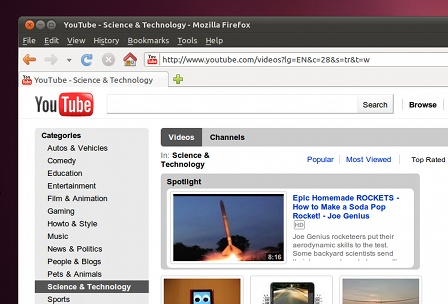

<div class="header"><h1 class="title">Browse the web</h1></div>

<div class="main">

<div class="text">

<div class="description">
Ubuntu includes Mozilla Firefox – for fast, safe web browsing. You can also choose alternative open-source browsers from the Ubuntu Software Centre.
</div>
<div class="footer">
TODO: included / available software!
</div>

</div>



</div>
